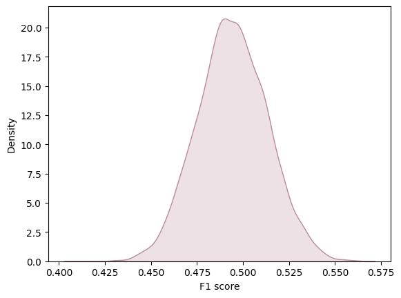

Our first model selection
Objectives for estimation.
The main objective of this analysis is to develop a classification model that can accurately predict the price range of a mobile phone. The target variable, "prize_rank," is categorized into four classes: low cost (0), medium cost (1), high cost (2), and very high cost (3). Our aim is to find a model that demonstrates high performance and generalization metrics, enabling us to make reliable predictions on new data. This model is crucial in assisting consumers in making informed decisions about mobile phone purchases, as well as providing valuable insights to the industry regarding consumer preferences concerning mobile device pricing. Our approach will focus on maximizing metrics such as accuracy, F1_score, and specificity to ensure reliable and precise prediction of mobile phone price ranges.
Details about your initial model selection.
After exploring various classification models, we identified a model that aligns well with what was covered in
class: the logistic regression model. Logistic regression is a statistical method used for binary classification
tasks, but it can be extended to handle multiclass classification, as in our case with four price range
categories.
Logistic regression works by estimating the probability that a given input belongs to each class using a
logistic function. It employs optimization techniques, such as gradient descent, to fit the model parameters to
the training data. Additionally, logistic regression can handle both linear and nonlinear relationships between
the input features and the target variable, making it a versatile choice for classification tasks.
Furthermore, logistic regression provides interpretable coefficients, allowing us to understand the impact of
each feature on the predicted probabilities. This transparency is valuable for interpreting the model's
predictions and gaining insights into the factors driving the price range classification of mobile phones.
In our case, we had several options for selecting the model inputs. However, through trial and error, we
concluded that the variables that best suited the inputs were 'battery_power', 'int_memory', 'ram',
'touch_screen', 'wifi', 'fc', and 'four_g'. These features were chosen based on their relevance and performance
in predicting mobile phone price ranges during the model selection process.
Click here to Check the model on Google Colaboratory
Information on validation methods and the metrics employed.
For our machine learning model, we are using the holdout validation method, where we split our dataset into a training set (70%) and a test set (30%). The metric employed to evaluate the performance of our model is accuracy and F1 score.
To comprehensively evaluate the model performance, we ran the logistic regression model 10,000 times to determine the distribution of evaluation metrics. This allowed us to gain a more complete understanding of the variability in model performance and facilitated the creation of graphs to visualize these distributions. In this analysis, we are considering precision and F1 score and accuracy score as the average of all values obtained across these 10,000 iterations. This methodology provides us with a robust measure of the overall model performance, taking into account the inherent variability in the data and modeling process. Furthermore, we utilized confusion matrices to visualize sensitivity, precision, and accuracy. This visualization technique allowed us to gain insights into the model's performance across different classes and identify any systematic errors or biases in the classification results.
Accuracy
F1 score
confusion matrix Normalize pred

Preliminary conclusions drawn from your analysis to date.
In conclusion, based on the evaluation of our logistic regression model, it appears that the model performance is suboptimal. The accuracy of 0.535 and an F1 score of 0.503 indicate that the model's predictive ability is limited. Furthermore, an analysis of the normalized confusion matrix reveals notable discrepancies between predicted and actual price range classifications. For instance, the model correctly identifies devices in price range 0 around 72% of the time, but it frequently misclassifies them as price range 1. Similarly, the misclassification rates for other price ranges suggest significant room for improvement. Notably, the most prevalent error occurs when the actual price range is 0, where the model incorrectly labels devices as price range 1 around 23% of the time. These findings underscore the need for further refinement and feature engineering to enhance the model's predictive accuracy and generalization capabilities. Additionally, exploring alternative modeling approaches or incorporating additional relevant features may lead to improvements in performance.